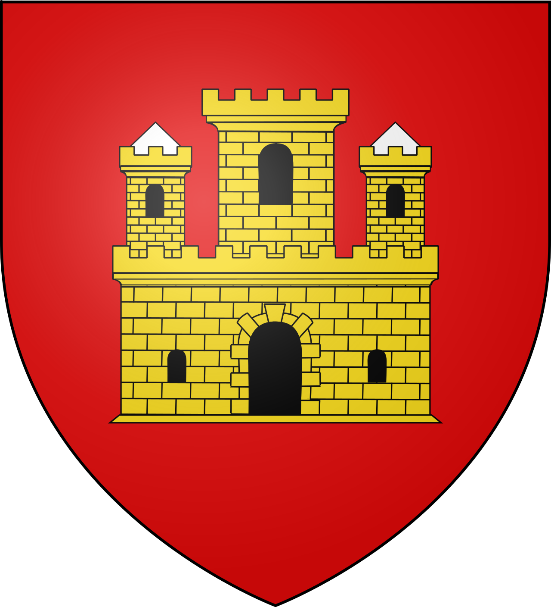
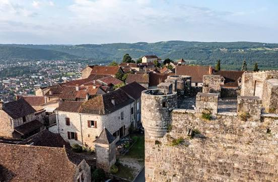

Capdenac
le-Haut
l'oppidum


⟹ Sur les traces d'Uxellodunum ⟸

Étiré sur une étrave rocheuse qui surplombe de plus de cent mètres la vallée du Lot, Capdenac-le-Haut fut dès l'époque gauloise un site fortifié, à l'endroit stratégique où la rivière quitte les hautes terres du Massif Central. Une hypothèse tenace en fait le légendaire Uxellodunum, ultime lieu de résistance gauloise face aux légions de César en 51 avant J.-C. — une thèse défendue dès 1816 par l'archéologue Jacques-Joseph Champollion après d'importantes fouilles sur le site.

En 1866, alors que le maire du village creusait une cave dans son jardin, il mit au jour un trésor de plusieurs milliers de pièces d'argent gauloises, soigneusement dissimulées dans une jarre — une découverte qui vint conforter l'ancienneté du site. Cité marchande florissante au Moyen Âge, la citadelle devint ensuite une place de sûreté protestante après l'édit de Nantes.
Prosper Mérimée, en visite sur les lieux, tenait Capdenac-le-Haut pour l'un des plus beaux sites de France.
— Souvenir attribué à Prosper MériméeAvec l'arrivée du chemin de fer au XIXe siècle, les activités se déplacèrent dans la vallée, donnant naissance à la ville nouvelle de Capdenac-Gare. Le village haut, resté à l'écart de l'industrialisation, a conservé intact son labyrinthe de ruelles pavées et son riche patrimoine fortifié, aujourd'hui classé parmi les Plus Beaux Villages de France.
Capdenac-le-Haut cultive depuis deux siècles le mystère de son identité antique. Est-il vraiment l'Uxellodunum décrit par Jules César dans ses Commentaires sur la guerre des Gaules, théâtre en 51 avant J.-C. de la toute dernière résistance gauloise à l'envahisseur romain ? La théorie, aujourd'hui débattue par les historiens, continue d'alimenter la fierté et l'imaginaire du village, entretenue par les fouilles et les visites commentées de l'association locale de recherche archéologique.
Visites commentées : l'association Archéologie-Patrimoine-Uxellodunum-Capdenac propose toute l'année des visites du site sur rendez-vous, ainsi qu'une salle d'exposition ouverte au public.
Circuit des Clefs de Capdenac-le-Haut : un parcours familial à travers donjon, places, portes fortifiées et fontaines secrètes, pensé pour petits et grands explorateurs.
Alentours : à seulement quelques minutes, Figeac et sa vieille ville médiévale, ville natale de Champollion, complètent idéalement la visite de la vallée du Lot.
Meilleure période : le printemps et l'été, pour profiter pleinement des points de vue sur la vallée et des visites guidées du site.
Accès : un grand parking est aménagé à l'entrée du village ; le guide « Les clefs de Capdenac » est disponible au point d'accueil du donjon.
Se loger : gîtes et chambres d'hôtes à Capdenac-le-Haut et dans la proche ville de Figeac ; l'office de tourisme du Pays de Figeac renseigne sur les visites.